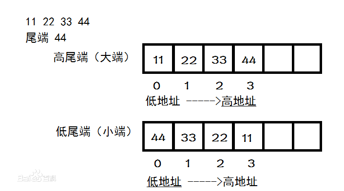

数据类型¶
数据类型的本质：固定内存大小的别名
数据类型的作用：
- 决定了定义变量的内存存储大小
数据类型的误区：
- 它不能决定定义变量的内存存储形式
- 它不能决定定义变量的内存存储模式
现代整个计算机科学都是建立在二进制基础上，所有数据都是以0和1组合形式进行存储和传输的。这里的0或1就是1bit
0x00 存储大小¶
在通信领域，网络带宽传输速度的基本单位是比特(bits)
然而在计算即领域，磁盘存储数据的基本单位是字节(Bytes==1字节等于8比特)；不同数据类型变量的存储大小是不一样的，例如：char类型变量64位系统下的存储大小是1字节， short类型变量64位系统下的存储大小是2字节。具体相关介绍可见数据类型详解目录表
需要注意的是：
- c语言没有规定数据类型(例如int类型)的具体大小，数据类型的具体大小和系统有关；同一系统下，同一种数据类型的大小是相同的
- 数据类型只是一个声明，并没有占用内存空间，只有当使用数据类型定义一个变量时，变量才占用空间，其所占用空间大小由数据类型决定，数据类型声明的内存大小和变量所占的内存大小都可以使用
sizeof关键字来获取
0x01 存储形式¶
在计算机中，我们都是以补码的形式存储并运算数据。采用补码存储的最大作用就是减法也可以通过加法器实现
- 所有正数都是以补码的形式存放====正数的补码与其原码、反码都相同，都是正数的二进制，最高位为0
- 所有负数都是以补码的形式存放====最高位为1保存不变，其它位都和原码相反，转换成反码；然后在反码的基础上加1，转换成补码
0x02 存储模式¶
既然所有正数和负数都是以补码的形式进行存储，那么此时存储方式有两种：
小端模式：数据的高字节保存在内存的高地址中，而数据的低字节保存在内存的低地址中，这种存储模式将地址的高低和数据位权有效地结合起来，高地址部分权值高，低地址部分权值低[Unix服务器CPU ]大端模式：数据的高字节保存在内存的低地址中，而数据的低字节保存在内存的高地址中，这样的存储模式有点儿类似于把数据当作字符串顺序处理：地址由小向大增加，而数据从高位往低位放[x86/ARM]
对0x11223344的两种存储模式如下：

需要注意的是：大端模式和小端模式只与CPU架构相关；同一CPU架构下存储模式是相同的